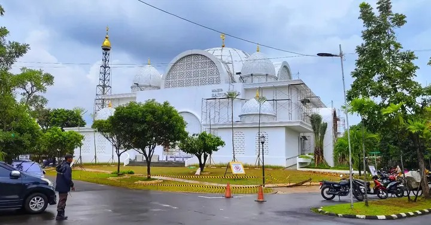
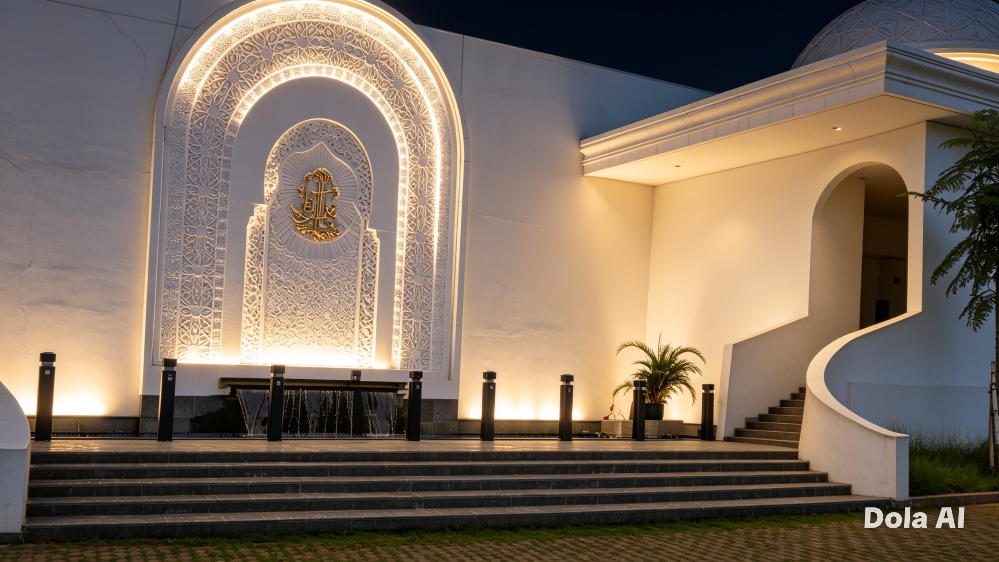
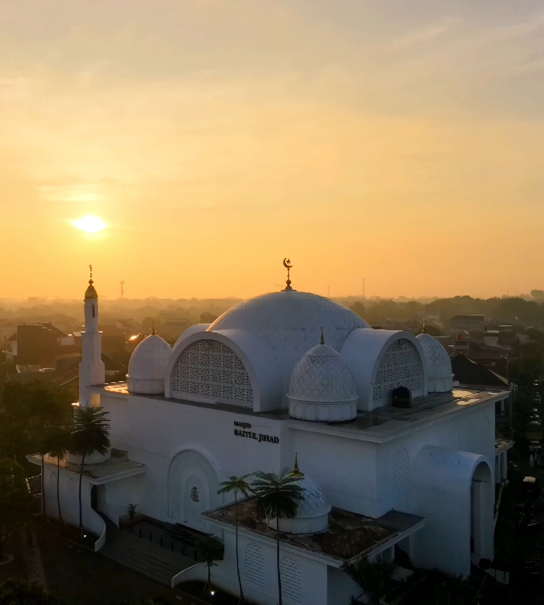

Perjalanan Seperempat Abad Menegakkan Tiang Dakwah
Sebelum menjadi bangunan masjid yang megah seperti sekarang, lahan masjid merupakan fasilitas sosial dan fasilitas umum (fasos-fasum) perumahan Kemang Pratama. Pada tahun 2003, pihak pengembang menyerahkan pengelolaan fasos-fasum ini sepenuhnya kepada warga RW 36 Kemang Pratama 2.
Seiring berjalan waktu, kebutuhan warga akan ruang ibadah dan kajian yang lebih luas semakin meningkat. Pengurus yayasan memutuskan untuk memindahkan masjid dari lokasi lama ke area fasos-fasum yang baru guna membangun struktur yang lebih memadai.
2003Tahun pengelolaan oleh RW
2025Revitalisasi Modern
2.000Daya Tampung Jamaah
2.406m2Luas Lahan



Akses & Komunikasi